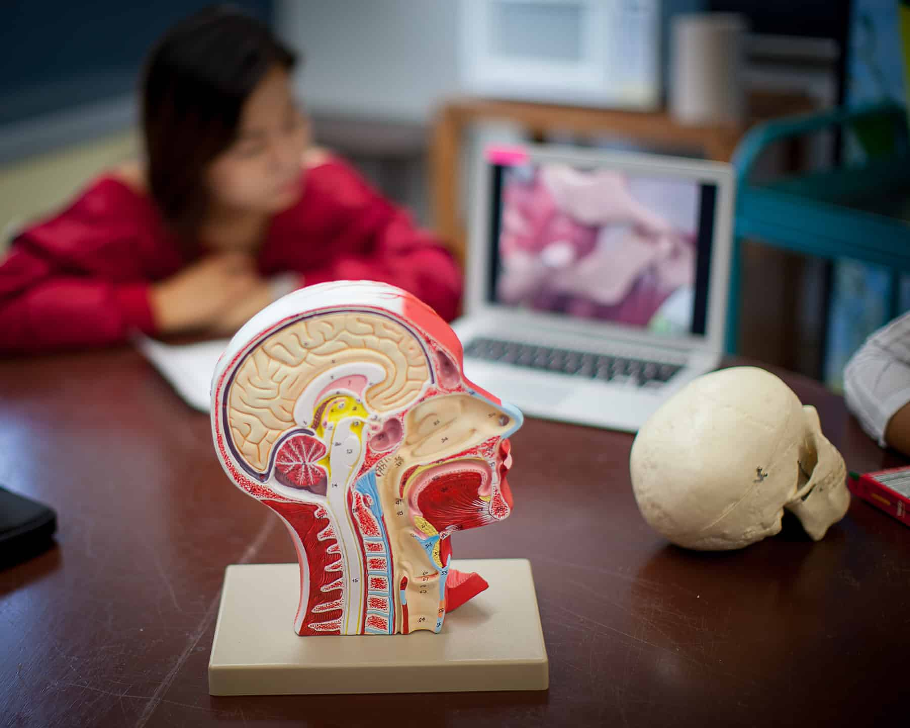

School of Science

Biology
A biology degree provides a foundation in the study of living organisms — a field that offers a variety of options for graduates. Careers in biology often require research, communication, teamwork, time management and computer skills. A biology major at JSS TRUE Global combines scientific and research abilities with critical thinking and communication skills.
In addition to taking a comprehensive program of biology courses, biology majors have the opportunity to explore related fields such as chemistry, physics and mathematics. Graduates will have core scientific skills that can be used in a variety of ways, ranging from careers in education, industry or research to graduate study.
Biology with Pre-Professional Concentrations
- Biological Studies
- Chemistry
- Environmental Health
- Medical Sciences
- Medical Technology
- Natural Resource Conservation & Enforcement
- Occupational Therapy
- Physical Therapy
- Veterinary Medicine
Biology majors will learn to:
- Describe the fundamental concepts of the biological sciences at an in-depth level.
- Appreciate scientific literature.
- Demonstrate a broad knowledge related to laboratory and field techniques.
- Demonstrate familiarity with sophisticated, state-of-the-art instrumentation.
- Perform scientific investigations and interpret scientific data.
- Demonstrate scientific writing skills.
- Relate problem-solving to scientific learning.
- Apply critical thinking skills to biological questions.
- Demonstrate preparation for entry and success in science-related post graduate training programs, graduate and professional schools, industry or teaching.
Criminal Justice
The Criminal Justice major includes an overview of the criminal justice system including its three basic components: the police, courts, and corrections. Criminological theory and research examine criminal behavior and crime causation. The combination of criminal justice coursework and hands-on learning through internships prepares students for careers in law enforcement, the law or corrections or to pursue graduate and professional education.
Students completing a major in criminal justice will:
- Demonstrate knowledge of the criminal justice system including the core components of the police, the courts and corrections;
- Explicate crime and criminal behavior by examining criminological theories of crime causation;
- Demonstrate critical thinking skills by analyzing and discussing criminal justice issues;
- Demonstrate knowledge of research skills by writing scholarly papers on criminal justice topics;
- Connect substantive areas of academic coursework to real-life application in a criminal justice field through internships.
Psychology
The Psychology major offers a traditional, basic program of courses in psychology, covering major content areas and preparing students for graduate training. A special emphasis of the program is on research and applied areas, such as mental health counselling, consistent with common student interests and current trends in the field.
The Psychology major provides excellent preparation for a number of careers in such areas social services, health care, government, business and teaching (in conjunction with the education major or an advanced degree). In addition, students wishing to continue their education at the graduate or professional level in the behavioural sciences will find that the Psychology major provides a solid foundation for both.
Internship opportunities are included in the major and offer real life experiences in preparation for future careers.
Students completing the Psychology major will:
- Apply psychological theory and concepts to everyday world
- Demonstrate psychological information literacy
- Use proper APA-style in written format
- Effectively deliver and structure an oral presentation
- Adopt values that build community at local, national, and global levels.
Human Services:
This major is intended to prepare students for a variety of “helping professions” so they can respond to changes in the economy, the healthcare system, and society. The combination of coursework offers a solid grounding in the exploration of human and social problems and effective responsiveness in professional and personal settings. It is expected that students completing the Human Services major will:
Students completing the Psychology major will:
- Exhibit the ability to communicate clearly in oral and written communication
- Demonstrate proficiency in skills necessary for creating, testing and evaluating hypotheses and evaluating research
- Perform successfully in a job-related field experience in an area of special interest to the “helping professions”
- Demonstrate specific skills commonly used in counselling, and understand common issues typically faced by counsellors
- Differentiate the major models of abnormal behaviour and their implied methods of intervention
- Articulate major issues facing contemporary law enforcement